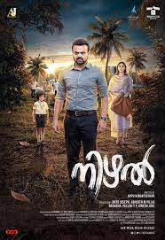

Malik
A young man rises to prominence through his unswerving fight against political and police corruption in
his
village.
Initial release: 15 July 2021
Director: Mahesh Narayanan
Music by: Sushin Shyam
Budget: 27 crores INR
Rating:8.2/10

Nizhal
John, a judge, struggles to recover from a traumatic accident and crosses paths with Nithin, a young
boy.
When Nithin's stories about murder are found to be true, John sets out to investigate them.
Initial release: 9 April 2021
Director: Appu N. Bhattathiri
Music by: Sooraj S. Kurup
Rating:6.4/10
The Priest
Father Carmen, a priest, joins hands with the police to investigate a series of mysterious suicides.
However, he soon stumbles upon a disturbing fact that has serious consequences.
Release date: 11 March 2021 (India)
Director: Jofin T. Chacko
Music by: Rahul Raj
Rating:6.5
Kuruthi
A story of how enduring human relationships transcend borders and struggle to survive the trials of hatred
and prejudice.
Initial release: 11 August 2021
Director: Manu Warrier
Music by: Jakes Bejoy
Rating:7.7/10